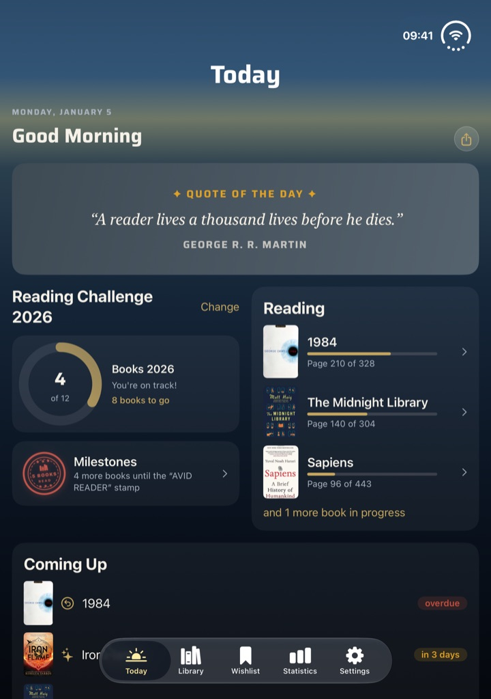
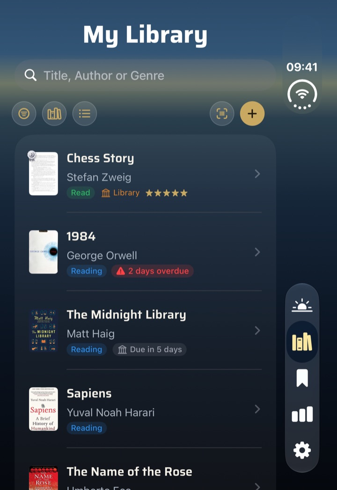

Everything BookSafe can do
Here are the new features of every earlier version, newest first. Together they show what BookSafe has to offer — from scanning and series to loans, wishlist and statistics, all the way to iCloud sync, Apple Watch and the Year in Review films.
Each description reflects the state of its version; some things have been developed further since. What the current version brings is on the version 1.9 page.
Version 1.8
On the App Store since 17 October 2026
BookSafe 1.8 is the update for everyone who collects comics and series: comics like Asterix are recognised correctly, you enter the cover, the volume and “Total volumes” right when adding a book, and Year in Review gets its fourth film design — the “Passport”.
New
1A fourth film design: the Passport
Alongside “Gilded”, “Clothbound” and “Almanac”, Year in Review now offers the Passport. It tells your reading year as a comic-style ID: ten pages to flip through, with stamps, a ticket and its own song. The film runs 80 seconds. Pick it like the other designs with the palette button.


2Share Year in Review as an image or as a video
The share button in Year in Review now asks what you want to share: “Share image” for the overview of your year, or “Share video” for the film in the design you picked. You can share the video without watching the film first.
3The cover right when adding a book
In “Add Book” you pick the cover straight away — from your photo library or photographed on the spot. When you take a photo, BookSafe crops the cover automatically. In the book details, both work under “Change cover”.
4Volume and “Total volumes” by hand
When adding a book you can now enter the volume and the number of volumes under “Series”. “Total volumes” can also be changed in the series sheet of the book details. Automatic updates never overwrite what you entered yourself.
5Contact & Feedback in Settings
Settings now have “Contact & Feedback”. It opens an email to us with the app version and device already filled in. No data from your library is included.
Improved
- comics are recognised correctly: the album title instead of a series name with a number such as “Asterix 02”, the right series instead of a publisher’s title, and the genre “Comic” instead of “Novel”
- an ISBN that belongs to a box set is added as the box instead of as volume 1
- “Clean Up Data” in Settings fixes the series of books you have already saved
- cleaner series names and subtitles: no catalogue brackets or hyphen chains, no marketing copy in the subtitle
- spin-offs land in their own series
Plus many further refinements.
Version 1.7
On the App Store since 12 October 2026
BookSafe 1.7 is the Year in Review update: your reading year now comes as a film in three designs — alongside the familiar “Gilded”, new as a bound book (“Clothbound”) and as a historic newspaper (“Almanac”). BookSafe also picks up tropes when a book has no blurb, and moves unread borrowed books to the front by due date.
New
1Two new film designs for Year in Review
Year in Review has a new palette button. Use it to pick how the film of your reading year looks. Each design comes with its own song, and every film can be shared as a video.
Clothbound tells your year as a bound book in three volumes: bookshelf, paper stack and a card from the reading catalogue, with a cloth cover that opens and pages that turn. The film runs one minute.
Almanac turns your year into a historic newspaper — with printing roller, stamp and sepia engravings. Your book of the year stands on the podium as a cut-out book. This film runs one minute too.
Gilded, the existing design with golden numbers on a glowing gradient, stays (40 seconds).
2Tropes even without a blurb
So far BookSafe only found tropes in the blurb. Now the app also picks them up from the keywords publishers report to the German National Library — such as “Enemies to Lovers” or “Forced Proximity”. Especially for new releases that don’t have a blurb yet, the tropes are there as soon as you add the book.
Improved and fixed
- Library sorted by status: unread borrowed books now come first, the one due soonest at the top
- book data even during an outage at the German National Library: BookSafe then switches to a second data format; if the library doesn’t respond at all, the app says so instead of claiming the book isn’t in any catalogue
- the labels of the numbers in statistics and Year in Review are easier to read
- on the Year in Review podium, VoiceOver reads “Book of the Year – place 1” along with title and author
- the release-day fireworks show the right books and covers from the very first moment
Plus many further refinements.
Version 1.6
On the App Store since 7 October 2026
BookSafe 1.6 is the device update: the app is ready for iPhone Duo and uses both its outer and inner display. On iPad in landscape, list and book sit side by side, a running reading session can be ended straight from the Live Activity, and finished reading sessions can now be edited.
New
1Ready for iPhone Duo
BookSafe uses both displays of iPhone Duo. Folded, the toolbar runs as a vertical bar along the right edge. So that filter, sorting and view don’t disappear into an overflow menu, they sit in their own row of chips above the list, and the buttons in sheets show ✕ and ✓ instead of text.
Unfolded, the tiles in your library and your own lists line up with the fold: the number of columns is even, so no tile sits in the fold. “Today” and the statistics use the width in two columns. In landscape the list stays wide, and an open book shows the cover to the left of the fold and the details to the right.
In tabletop mode — half open on the table — the reading timer puts cover and reading time above the fold, with “Pause” and “End Session” below.


2iPad in landscape: list and book side by side
On iPad in landscape, library and wishlist show the list on the left and the selected book on the right. The split stays in place while you search with the keyboard open. Portrait stays as you know it.
3End a reading session from the Live Activity
The reading session’s Live Activity now has an “End” button — on the Lock Screen and in the Dynamic Island. After unlocking, BookSafe opens straight to the end page. Because iOS only runs the button once you unlock, the session ends at that moment.
The expanded view in the Dynamic Island has been rearranged: the reading time sits in the control row and stays fully readable past the one-hour mark.
4Edit past reading sessions
In the book detail, every finished session has a pencil after its duration. It opens the “Session” sheet with date and time, duration and pages read. If you change the number of pages, the book’s reading progress moves by the difference.
From six sessions on, “All Sessions (n)” leads to the full list — where older sessions, previously out of reach, can be edited and deleted too. Deleting leaves the reading progress unchanged.
Improved and fixed
- anthologies and collections without an author in the catalogue now take the editor as author
- if a title or author is still missing, “Add Book” now tells you what’s missing instead of silently disabling the button
- VoiceOver reads title, author and status in the tile view
- in the reading timer, “Pause” and “End Session” stack when space is tight instead of wrapping
- in a series opened from “Today” or the statistics, tapping a volume did nothing
- in the release celebration in landscape, “Done” sat below the screen edge
- milestone stamps now carry English names in the English interface
Plus many further refinements.
Version 1.5
On the App Store since 27 September 2026
BookSafe 1.5 brings your own lists: put books into lists you name yourself, browse them in a view of their own and share them with others — your whole wishlist, too. A running reading session now shows up on the Lock Screen, a wrong edition can be swapped, and on Apple Watch you can discard a session you started by mistake.
New
1My lists
You can now put books into lists you name yourself — like “Autumn reads” or “Holiday 2027”; a book can be in several lists. In the book detail, the section for this is called “Location & my lists”: tap “Lists” to open a checklist, where you can also create new lists. The same works when adding a book.
Under “Sort & Filter”, the new “Filter by my lists” block filters your library by a list, with the number of books; a long press renames or deletes a list. Search finds books by their lists, too. Lists from earlier imports appear automatically.
2The “My lists” view
Library and wishlist now have a third view next to list and grid. It shows each of your lists as a carousel with covers and the number of books. A button lets you add several books to a list at once. An opened list has its own search and its own sorting, which your device remembers.
3Share lists and your wishlist
Any of your lists can be shared — as a story image with the covers, the list name, the number of books and your reading progress, or as text with every book and its ISBN, ready for messages and mail. If a list doesn’t fit on one image, it ends with “+ N more”; the text always includes every book.
A new button in the wishlist shares your whole wishlist the same way, sorted by priority — handy for family and friends. Books that are still to be released carry their release date, most-wanted ones a star.
4Your reading session on the Lock Screen
A running reading session now appears as a Live Activity on the Lock Screen and in the Dynamic Island — with cover, title, starting page and the running reading time. Pause and resume right there without opening the app; if the session is also running on your Apple Watch, the watch follows along. Tap it to open the session in the app.
5Change edition
Picked the wrong edition when adding a book, say the e-book instead of the paperback? In the book detail, swap it under “More actions → Change Edition” for another edition of the same volume, instead of deleting the book and adding it again. A preview shows what will change first. Reading status, rating, notes, reading sessions, location and your lists stay, and so does a cover photo of your own unless you choose the new cover. The feature is available for books in a series.
6Discard a reading session on Apple Watch
Started one by mistake or forgot the timer? Tap the ✕ in the top left of the watch timer and, after a confirmation, the session is discarded. It disappears from watch and iPhone and doesn’t show up in your statistics.
Improved and fixed
- importing CSV files from other book apps recognises another format, takes over the storage place as location and reads more date formats
- the library PDF export takes covers from the thumbnails stored on your device — much faster for large libraries, and covers appear even offline
- “More volumes in this series” occasionally left out a volume
Plus many further refinements.
Version 1.4
On the App Store since 25 September 2026
BookSafe 1.4 brings new features around your own library: if you are moving over from another book app, your ratings, reading dates and notes now come with you. Series can be grouped into a single entry, printed books get a location, and authors can be sorted by last name.
New
1Moving from another book app with everything included
Importing CSV files from other book apps now brings over each book’s rating, reading status, reading dates, shelves or tags, review and notes, series and volume, format and loan — previously only the ISBN came along. Anything BookSafe doesn’t know itself, such as purchase details, goes into a separate block in the book’s note, so nothing is lost. A rating on a ten-point scale is converted to five stars.
Books without an ISBN now come along too, and ISBNs that lost their leading zeros when the file was edited in Excel are repaired. Titles, covers and the other book details are filled in by the online search as before.
2Group series
A new switch under Settings → Appearance → “Group Series” shows every series with two or more books as a single entry in your library, with a cover and the number of books — in the list and in the grid. One tap opens the series with all its volumes. When you search, you still see the individual books. The switch starts out off, and it changes nothing about the library itself.
3A location for your own books
In the book detail and when adding a book, you can now record where a printed book lives: a place you name yourself, like “Living room bookcase”, and, if you like, a shelf. Places and shelves you have used before are offered for selection, so you only type them once. Library search finds books by their location, too. If an imported file includes location details, they are carried over.
4“Author (Last Name)” sorting
Next to the existing author sorting there is now “Author (Last Name)”: “Sebastian Fitzek” sits under F, “Ursula K. Le Guin” under L, “Ludwig van Beethoven” under B. The sorting is also available in the wishlist.
Fixed
- some texts in the import dialog appeared in German in the English version
Plus many further refinements.
Version 1.3
On the App Store since 23 September 2026
BookSafe 1.3 is a polish update. It adds no new areas; instead it makes what is there more reliable, faster and better looking: release reminders arrive reliably, the widgets use their space, and the app responds noticeably quicker.
Improved
Release reminders arrive reliably
When a book with a release date is on your wishlist, BookSafe lets you know on publication day — now reliably even when the book reached your wishlist from another device or its exact date only became known later. The app re-plans its reminders from the current state of your wishlist every time it starts, instead of relying on dates it set once.
If several books come out on the same day, you get one reminder for all of them instead of one per book.
The widgets use their space
Less margin, more content: covers are larger, and book titles may run to two lines instead of being cut off after a few letters. The large widget fits five books per column instead of four. The small widgets place the countdown next to a larger cover, and the medium widgets follow the same layout.
Faster tab switching and a faster launch
When you switch tabs, BookSafe now reloads the library only if something in it has actually changed. A clean-up check that used to run every time the app opened now runs only once. And the widgets are only redrawn when their data has changed. The difference is most noticeable with large libraries and on older iPhones.
Books without a cover look good
When a book has no cover, BookSafe now shows a designed panel with the title everywhere instead of an empty book symbol — in the list, in the grid, on the Today cards and in the book detail. Every book stays recognisable at a glance.
The reading update fills the space
The story image from the Today tab makes better use of the free space: when the quote is short, it shows up to four books instead of three.
Fixed
- a false alarm on the first of the month when only the month and year are known for a wishlist book
- in the “Certificate” quote style, the ring ran through the signature line
- in the “First Edition” quote style, the gold frame ran under the gilt edge and a long line ran into the corner diamonds
Plus many further refinements.
Version 1.2
On the App Store since 14 September 2026
BookSafe 1.2 brings five new features — and alongside them a lot of work on something you don’t see but do notice: covers now appear instantly, even offline.
Five new features
1Backup — your library as a single file
Save your entire library as one file: every book with its data, your reading sessions and the covers you picked from your own photo library. On a new device you bring it back — you choose the file, see a preview of what is about to happen, and then confirm.
Restoring only fills gaps and never overwrites anything. A book that already exists on the device keeps its values; the backup only adds fields that were empty. Reading progress and reading status are never rolled back.
2The scanner also reads the printed ISBN
Books with a damaged, covered or missing barcode can now be added anyway. In a single pass the scanner looks for both — the barcode and the printed ISBN on the cover or in the imprint.
A number is only accepted if its check digit is valid. If several possible numbers are on the page, the scanner asks instead of guessing.
3Reading status “Abandoned”
For books you deliberately stop reading. They leave “Reading” without counting as finished — not in your statistics, not in your yearly goal, not in your reading streak. In the statistics overview they get a line of their own, separate from “Finished”.
4Share a reading update
One tap in the Today tab creates a finished story image of the books you’re currently reading, progress included — 1080 × 1920 pixels, so it fits an Instagram story or a WhatsApp status without cropping.
5Wishlist and reading history
Your wishlist now shows the edition’s language underneath each release date — which title is the translation and which the original is right there in the row. And tapping a polaroid in your reading history opens the book instead of just looking good.
Improved
Covers appear instantly — even offline
BookSafe keeps a small preview of every cover on your device instead of reloading it every time you scroll. Browsing your library, the images therefore come from the device and not from the network — and they are there even when you have no connection. After a restore or a device change the app refills that layer on its own.
The cover picker finds the right book
For series it no longer offers another volume, empty and placeholder tiles are gone, and a cover address that can no longer be reached is replaced automatically. A cover you picked yourself stays your pick — the automation leaves it alone.
English-language books
English-language ISBNs are now searched in additional catalogues, and the edition’s language is detected more reliably. If an ISBN turns up nothing, you go straight to the title search instead of being left with empty fields.
Apple Watch
After an update or a reinstall, covers arrive on the watch again instead of staying grey.
Fixed
- a wrong finish date for reading sessions added later
- a book that jumped to “Finished” when its page count was corrected during a session on the watch
- “2,026” instead of “2026” on the final page of the year film
- text from a publisher’s website instead of the blurb in book descriptions
- a Today tab that shared a different quote than it showed
Plus many further refinements.
Version 1.1
On the App Store since 15 August 2026
New
- Apple Watch – start, pause and finish reading sessions right on your wrist, with end-page input via the Digital Crown. The watch works even without your iPhone nearby – your sessions arrive safely on your iPhone later.
- A running reading session now sticks around, even if you close the app – a banner in “Today” and in the book detail takes you back with one tap.
- “Search book data again” – fetch a book’s data once more with a side-by-side comparison and decide field by field what to apply.
- Your own edits are protected – fields you edited by hand are no longer overwritten automatically. And every field in the book detail is now editable.
Improved
- Scrolling and app launch stay smooth, even while iCloud syncs in the background.
- The cover search finds the right edition more reliably and in higher resolution. Automatic cover improvement is now a switch – off by default.
Fixed
- A crash when deleting a book from the detail view, and an award animation that played on every rating change.
Many further refinements.
Version 1.0
On the App Store since 6 August 2026
New
- ICloud Sync – your library syncs automatically across all devices signed in with the same Apple ID. It stays on your device and in your private iCloud – offline-capable, no sign-up, for everyone and without Pro. Deliberate duplicate copies are kept when merging.
- Ownership chip in the library – one tap cycles through All, Owned and Borrowed.
Improved
- App launch feels noticeably smoother, even while syncing in the background.
- Your yearly reading-challenge goal now syncs, too.
Fixed
- Tapping “Series” now always opens the series view – even from “Today” or Statistics.
- The average rating can no longer exceed the 5-star scale, German devices show the decimal comma again, and English text no longer shows German-style quotation marks.
Many further refinements.
Version 0.9
On the App Store since 28 July 2026
New
- “Today” – your new start tab. BookSafe greets you with a daily page: the quote of the day, your yearly goal with the next milestone stamp, the book you’re currently reading and your upcoming dates (releases and loan returns). Two columns on iPad – with the new wide cards “Coming Up” and “Recently Finished”.
- Quote of the Day – a new, curated reading quote every day (more than 100, mixed German and English) in a card design that changes daily: from book page to chalkboard, star chart and cinema marquee.
- Statistics now include Milestones & Reading History – the contents of the former Achievements tab have moved there. Reading History adds a year overview with tappable months.
Improved
- “More books by this author” now finds considerably more – even when catalogues list the author with a middle initial (“Douglas J. Preston”) or a double-barrelled name (“Marie von Ebner-Eschenbach”).
- The “Excellent” seal and top-3 medals now appear reliably on every cover – including series, genre views and the Today tab.
- The four special milestone stamps now come before the counting stamps – they’re usually earned first.
- Date rows stay readable at very large text sizes – cover and countdown stack instead of squeezing the title.
Fixed
- For books with several authors, tapping a name now opens the right author’s works.
Many refinements and more everyday stability.
Version 0.8
On the App Store since 24 July 2026
New
- Your reading year as an animated film – flip-up stats, a month-by-month timeline of your finished books, a page counter racing up and, as the finale, your top-3 podium in gold, silver and bronze. Watch it in the app with music or share it as a video (Statistics → “Year in Review” → Play).
- Year in Review with your “Top 3 of the year” – key figures like books, pages, top genre and most productive month; your three books of the year wear gold, silver and bronze medals across the app.
- A fresh look – new accent typeface, cleaned-up colors (wishlist purple, owned books gold), redesigned app icons and a reworked polaroid pinboard in Achievements.
- Shared cards carry subtle BookSafe branding; the library card now shows the full cover.
Improved
- “More books by this author” opens a pre-filled “Add book” screen – set reading status, rating and format in one go.
- Covers appear more reliably – even for editions without a cover of their own; the cover picker offers high-resolution candidates again.
- The loans widget makes better use of its space and picks up the cover’s color mood; the extra-large iPad widget shows 8 books.
- Smoother scrolling in the grid view and a buttery-smooth reading-progress slider again.
- Statistics and the reading challenge now count identically; the PDF export truncates long titles cleanly.
- Notifications now appear as banners while the app is open.
Fixed
- Wrong volume counts like “of 998”; pulsing countdowns respect “Reduce Motion”.
Many refinements and more everyday stability.
Version 0.7
On the App Store since 16 July 2026
New
- More books by this author – tap an author name in your stats or in a book's detail view and browse all their books; books you own carry a golden seal, new finds go straight to your wishlist after a quick confirmation.
- Tappable genres – tap a genre in your statistics to see every book of that genre in your library as a cover grid.
- Author search in “Add book” – the magnifier next to the author field finds all books by that author and fills in the chosen result completely.
- Release-day fireworks – when a wishlist book is released, BookSafe celebrates on the next app start with a big cover and a short burst of fireworks (can be turned off).
Improved
- Searching for a series name now reliably surfaces its volumes at the top of the results – even when each volume carries its own episode title.
- “More volumes of this series” now only shows editions in your device language – with correct volume numbers and the right cover per volume.
- Release dates of pre-orders refine themselves automatically as soon as the catalog knows the exact day; year-only dates are shown honestly as a year and can be tapped to set the exact date.
- Library and wishlist filters and sorting are remembered across restarts.
- The loans list shows the reading status right in the row and orders equal statuses by due date; on iPhone, title and author get their full width back.
- IPad: The sidebar now starts collapsed to save space – changeable in Settings.
- Author, series and genre views share a calm, unified background gradient and perfectly aligned cover grids.
Many refinements: consistent author initials (“J. K. Rowling”), more robust sharing and better everyday reliability.
Version 0.6
On the App Store since 12 July 2026
New
- Special volumes with half numbers – in-between volumes like “book 8.5” are recognized when scanning, shown correctly everywhere (“8.5 of 9”), sorted properly and can be entered manually.
Improved
- The series screen now offers every edition of a volume – hardcover, paperback, e-book and audiobook, each with its own cover.
- “Find more volumes” discovers far more volumes; a newly added volume disappears from the suggestions immediately and reliably picks up series + volume number.
- If a print edition carries no series info, BookSafe now picks it up automatically from the e-book or audiobook edition – including the volume number.
- Title search now lists editions individually (hardcover, paperback, e-book, audiobook) in a new, cleaner results list with year and format.
- A tidier “Add book” screen – ISBN entry and scanner now sit right at the top; the rest fills in automatically.
- Wishlist, ownership and loans are now cleanly separated – when a book leaves your wishlist, you choose “Bought” or “Borrowed”.
- When several borrowed books are due on the same day, BookSafe sends one combined reminder instead of many single ones.
- The cover picker also offers covers from other editions of the same book.
Fixed
- A possible crash when deleting a book while data was still loading in the background.
Many refinements: more consistent book data, new tropes, small display fixes and a more reliable app update.
Version 0.5
On the App Store since 7 July 2026
New
- BookSafe for iPad – a true iPad layout with a sidebar, wide list rows, two-column statistics, a large calendar and an extra-large widget.
- The 6th "Excellent" star – mark your all-time favourites with a special, shimmering star.
- Find more books in a series – see the volumes you're missing and add them with a tap.
- Search by title – tap the magnifier in "Add book" to find a book even without its ISBN.
- Top authors in your statistics – see who you read the most at a glance.
- Automatic theme/trope detection from the book description.
Improved
- Better readability in light mode over dark cover backgrounds.
Many refinements and more stability.
Version 0.4
On the App Store since 1 July 2026
The first version on the German and English App Store, including what 0.3 brought.
New
- A fresh look across the whole app – calm gradient backgrounds, clean card styling, beautiful in both Light and Dark Mode.
- "Next Release" countdown widget for your Home and Lock Screen – always keep an eye on when your next wishlist book arrives.
- BookSafe Pro – the free version includes up to 50 books; with Pro you can store unlimited books. One-time purchase, no subscription.
- Loan tracker for library books – keep an eye on due dates and get reminded in time.
- Scan a library loan receipt – snap a photo and BookSafe marks the books as borrowed, due dates included.
- Fully localized in English and German.
Improved
- Noticeably more accurate series and volume-number detection.
Many refinements, bug fixes and stability improvements.